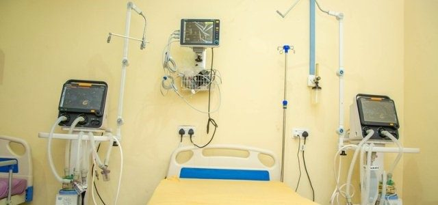

Centre of ExcellenceNephrology & Dialysis
Specialised care for kidney disease with haemodialysis and peritoneal dialysis options.
- Chronic & acute kidney disease management
- Haemodialysis & peritoneal dialysis
- Renal diet & transplant work-up